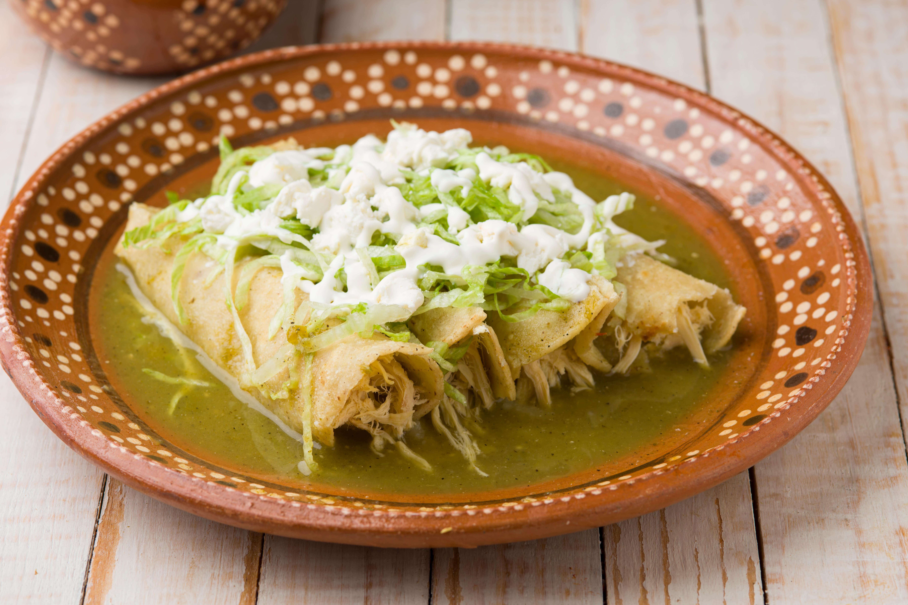

Enchiladas verdes

Como preparar enchiladas verdes con pollo
Ingredientes
- 500 gramos de tomates verdes cocidos
- 1/4 de cebolla
- 2 dientes de ajo
- 1 taza y media de crema
- 2 cucharadas de consome de pollo en polvo
- 1/2 cucharadita de pimienta negra molida
- 1/4 cucharadita de comino molido
- 4 ramitas de cilantro fresco desinfectado
- 2 tazas y media de agua
- 18 tortillas de maiz pasadas por aceite caliente
- 1 pechuga de pollo cocida y deshebrada (400 g)
- 1/2 cebolla fileteada
- 100 gramos de queso rallado
- 1/2 taza de media crema refrigerada
Procedimiento
- Para la salsa verde, licua los tomates con 1/4 de
pieza de cebolla, el chile serrano, el ajo, 1 1/2 tazas
de media crema, el consome de pollo, la pimienta, el comino
y el cilantro.
-
Vierte lo que licuaste en una olla, agrega 2 1/2 tazas de agua
y calienta hasta que espese ligeramente, moviendo constantemente.
Reserva
-
Caliente el aceite y pasa las tortillas. Rellena las tortillas
con el pollo, baña con la salsa verde, decora con un poco de
cebolla, queso y 1/2 taza de media crema. Ofrece.